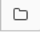

Use Databricks SQL in a Databricks job
You can use the SQL task type in a Databricks job, allowing you to create, schedule, operate, and monitor workflows that include Databricks SQL objects such as queries, dashboards, and alerts. For example, your workflow can ingest data, prepare the data, perform analysis using Databricks SQL queries, and then display the results in a Databricks SQL dashboard.
This article provides an example workflow that creates a Databricks SQL dashboard displaying metrics for GitHub contributions. In this example, you will:
Ingest GitHub data using a Python script and the GitHub REST API.
Transform the GitHub data using a Delta Live Tables pipeline.
Trigger Databricks SQL queries performing analysis on the prepared data.
Display the analysis in a Databricks SQL dashboard.
Before you begin
You need the following to complete this walkthrough:
A GitHub personal access token. This token must have the repo permission.
Databricks SQL and a serverless SQL warehouse or a pro SQL warehouse. See What are the available warehouse types and features?.
A Databricks secret scope. The secret scope is used to securely store the GitHub token. See Step 1: Store the GitHub token in a secret.
Step 1: Store the GitHub token in a secret
Instead of hardcoding credentials such as the GitHub personal access token in a job, Databricks recommends using a secret scope to store and manage secrets securely. The following Databricks CLI commands are an example of creating a secret scope and storing the GitHub token in a secret in that scope:
databricks secrets create-scope <scope-name>
databricks secrets put-secret <scope-name> <token-key> --string-value <token>
Replace
<scope-namewith the name of a Databricks secret scope to store the token.Replace
<token-key>with the name of a key to assign to the token.Replace
<token>with the value of the GitHub personal access token.
Step 2: Create a script to fetch GitHub data
The following Python script uses the GitHub REST API to fetch data on commits and contributions from a GitHub repo. Input arguments specify the GitHub repo. The records are saved to a location in DBFS specified by another input argument.
This example uses DBFS to store the Python script, but you can also use Databricks repos to store and manage the script.
Save this script to a location on your local disk:
import json
import requests
import sys
api_url = "https://api.github.com"
def get_commits(owner, repo, token, path):
page = 1
request_url = f"{api_url}/repos/{owner}/{repo}/commits"
more = True
get_response(request_url, f"{path}/commits", token)
def get_contributors(owner, repo, token, path):
page = 1
request_url = f"{api_url}/repos/{owner}/{repo}/contributors"
more = True
get_response(request_url, f"{path}/contributors", token)
def get_response(request_url, path, token):
page = 1
more = True
while more:
response = requests.get(request_url, params={'page': page}, headers={'Authorization': "token " + token})
if response.text != "[]":
write(path + "/records-" + str(page) + ".json", response.text)
page += 1
else:
more = False
def write(filename, contents):
dbutils.fs.put(filename, contents)
def main():
args = sys.argv[1:]
if len(args) < 6:
print("Usage: github-api.py owner repo request output-dir secret-scope secret-key")
sys.exit(1)
owner = sys.argv[1]
repo = sys.argv[2]
request = sys.argv[3]
output_path = sys.argv[4]
secret_scope = sys.argv[5]
secret_key = sys.argv[6]
token = dbutils.secrets.get(scope=secret_scope, key=secret_key)
if (request == "commits"):
get_commits(owner, repo, token, output_path)
elif (request == "contributors"):
get_contributors(owner, repo, token, output_path)
if __name__ == "__main__":
main()
Upload the script to DBFS:
Go to your Databricks landing page and click
 Catalog in the sidebar.
Catalog in the sidebar.Click Browse DBFS.
In the DBFS file browser, click Upload. The Upload Data to DBFS dialog appears.
Enter a path in DBFS to store the script, click Drop files to upload, or click to browse, and select the Python script.
Click Done.
Step 3: Create a Delta Live Tables pipeline to process the GitHub data
In this section, you create a Delta Live Tables pipeline to convert the raw GitHub data into tables that can be analyzed by Databricks SQL queries. To create the pipeline, perform the following steps:
In the sidebar, click
 New and select Notebook from the menu. The Create Notebook dialog appears.
New and select Notebook from the menu. The Create Notebook dialog appears.In Default Language, enter a name and select Python. You can leave Cluster set to the default value. The Delta Live Tables runtime creates a cluster before it runs your pipeline.
Click Create.
Copy the Python code example and paste it into your new notebook. You can add the example code to a single cell of the notebook or multiple cells.
import dlt from pyspark.sql.functions import * def parse(df): return (df .withColumn("author_date", to_timestamp(col("commit.author.date"))) .withColumn("author_email", col("commit.author.email")) .withColumn("author_name", col("commit.author.name")) .withColumn("comment_count", col("commit.comment_count")) .withColumn("committer_date", to_timestamp(col("commit.committer.date"))) .withColumn("committer_email", col("commit.committer.email")) .withColumn("committer_name", col("commit.committer.name")) .withColumn("message", col("commit.message")) .withColumn("sha", col("commit.tree.sha")) .withColumn("tree_url", col("commit.tree.url")) .withColumn("url", col("commit.url")) .withColumn("verification_payload", col("commit.verification.payload")) .withColumn("verification_reason", col("commit.verification.reason")) .withColumn("verification_signature", col("commit.verification.signature")) .withColumn("verification_verified", col("commit.verification.signature").cast("string")) .drop("commit") ) @dlt.table( comment="Raw GitHub commits" ) def github_commits_raw(): df = spark.read.json(spark.conf.get("commits-path")) return parse(df.select("commit")) @dlt.table( comment="Info on the author of a commit" ) def commits_by_author(): return ( dlt.read("github_commits_raw") .withColumnRenamed("author_date", "date") .withColumnRenamed("author_email", "email") .withColumnRenamed("author_name", "name") .select("sha", "date", "email", "name") ) @dlt.table( comment="GitHub repository contributors" ) def github_contributors_raw(): return( spark.readStream.format("cloudFiles") .option("cloudFiles.format", "json") .load(spark.conf.get("contribs-path")) )
In the sidebar, click
 Workflows, click the Delta Live Tables tab, and click Create Pipeline.
Workflows, click the Delta Live Tables tab, and click Create Pipeline.Give the pipeline a name, for example,
Transform GitHub data.In the Notebook libraries field, enter the path to your notebook or click  to select the notebook.
Click Add configuration. In the
Keytext box, entercommits-path. In theValuetext box, enter the DBFS path where the GitHub records will be written. This can be any path you choose and is the same path you’ll use when configuring the first Python task when you create the workflow.Click Add configuration again. In the
Keytext box, entercontribs-path. In theValuetext box, enter the DBFS path where the GitHub records will be written. This can be any path you choose and is the same path you’ll use when configuring the second Python task when you create the workflow.In the Target field, enter a target database, for example,
github_tables. Setting a target database publishes the output data to the metastore and is required for the downstream queries analyzing the data produced by the pipeline.Click Save.
Step 4: Create a workflow to ingest and transform GitHub data
Before analyzing and visualizing the GitHub data with Databricks SQL, you need to ingest and prepare the data. To create a workflow to complete these tasks, perform the following steps:
Create a Databricks job and add the first task
Go to your Databricks landing page and do one of the following:
In the sidebar, click
Workflows and click  .
.In the sidebar, click
New and select Job from the menu.
In the task dialog box that appears on the Tasks tab, replace Add a name for your job… with your job name, for example,
GitHub analysis workflow.In Task name, enter a name for the task, for example,
get_commits.In Type, select Python script.
In Source, select DBFS / S3.
In Path, enter the path to the script in DBFS.
In Parameters, enter the following arguments for the Python script:
["<owner>","<repo>","commits","<DBFS-output-dir>","<scope-name>","<github-token-key>"]Replace
<owner>with the name of the repository owner. For example, to fetch records from thegithub.com/databrickslabs/overwatchrepository, enterdatabrickslabs.Replace
<repo>with the repository name, for example,overwatch.Replace
<DBFS-output-dir>with a path in DBFS to store the records fetched from GitHub.Replace
<scope-name>with the name of the secret scope you created to store the GitHub token.Replace
<github-token-key>with the name of the key you assigned to the GitHub token.
Click Save task.
Add another task
Click
 below the task you just created.
below the task you just created.In Task name, enter a name for the task, for example,
get_contributors.In Type, select the Python script task type.
In Source, select DBFS / S3.
In Path, enter the path to the script in DBFS.
In Parameters, enter the following arguments for the Python script:
["<owner>","<repo>","contributors","<DBFS-output-dir>","<scope-name>","<github-token-key>"]Replace
<owner>with the name of the repository owner. For example, to fetch records from thegithub.com/databrickslabs/overwatchrepository, enterdatabrickslabs.Replace
<repo>with the repository name, for example,overwatch.Replace
<DBFS-output-dir>with a path in DBFS to store the records fetched from GitHub.Replace
<scope-name>with the name of the secret scope you created to store the GitHub token.Replace
<github-token-key>with the name of the key you assigned to the GitHub token.
Click Save task.
Add a task to transform the data
Click
below the task you just created.In Task name, enter a name for the task, for example,
transform_github_data.In Type, select Delta Live Tables pipeline and enter a name for the task.
In Pipeline, select the pipeline created in Step 3: Create a Delta Live Tables pipeline to process the GitHub data.
Click Create.
Step 5: Run the data transformation workflow
Click  to run the workflow. To view details for the run, click the link in the Start time column for the run in the job runs view. Click on each task to view details for the task run.
to run the workflow. To view details for the run, click the link in the Start time column for the run in the job runs view. Click on each task to view details for the task run.
Step 6: (Optional) To view the output data after the workflow run completes, perform the following steps:
In the run details view, click on the Delta Live Tables task.
In the Task run details panel, click on the pipeline name under Pipeline. The Pipeline details page displays.
Select the
commits_by_authortable in the pipeline DAG.Click the table name next to Metastore in the commits_by_author panel. The Catalog Explorer page opens.
In Catalog Explorer, you can view the table schema, sample data, and other details for the data. Follow the same steps to view data for the github_contributors_raw table.
Step 7: Remove the GitHub data
In a real-world application, you might be continuously ingesting and processing data. Because this example downloads and processes the entire data set, you must remove the already downloaded GitHub data to prevent an error when re-running the workflow. To remove the downloaded data, perform the following steps:
Create a new notebook and enter the following commands in the first cell:
dbutils.fs.rm("<commits-path", True) dbutils.fs.rm("<contributors-path", True)
Replace
<commits-path>and<contributors-path>with the DBFS paths you configured when creating the Python tasks.Click
 and select Run Cell.
and select Run Cell.
You can also add this notebook as a task in the workflow.
Step 8: Create the Databricks SQL queries
After running the workflow and creating the required tables, create queries to analyze the prepared data. To create the example queries and visualizations, perform the following steps:
Display the top 10 contributors by month
Click the icon below the Databricks logo in the sidebar and select SQL.
Click Create a query to open the Databricks SQL query editor.
Make sure the catalog is set to hive_metastore. Click default next to hive_metastore and set the database to the Target value you set in the Delta Live Tables pipeline.
In the New Query tab, enter the following query:
SELECT date_part('YEAR', date) AS year, date_part('MONTH', date) AS month, name, count(1) FROM commits_by_author WHERE name IN ( SELECT name FROM commits_by_author GROUP BY name ORDER BY count(name) DESC LIMIT 10 ) AND date_part('YEAR', date) >= 2022 GROUP BY name, year, month ORDER BY year, month, name
Click the New query tab and rename the query, for example,
Commits by month top 10 contributors.By default, the results are displayed as a table. To change how the data is visualized, for example, using a bar chart, in the Results panel click
 and click Edit.
and click Edit.In Visualization type, select Bar.
In X column, select month.
In Y columns, select count(1).
In Group by, select name.
Click Save.
Display the top 20 contributors
Click + > Create new query and make sure the catalog is set to hive_metastore. Click default next to hive_metastore and set the database to the Target value you set in the Delta Live Tables pipeline.
Enter the following query:
SELECT login, cast(contributions AS INTEGER) FROM github_contributors_raw ORDER BY contributions DESC LIMIT 20
Click the New query tab and rename the query, for example,
Top 20 contributors.To change the visualization from the default table, in the Results panel, click
and click Edit.In Visualization type, select Bar.
In X column, select login.
In Y columns, select contributions.
Click Save.
Display the total commits by author
Click + > Create new query and make sure the catalog is set to hive_metastore. Click default next to hive_metastore and set the database to the Target value you set in the Delta Live Tables pipeline.
Enter the following query:
SELECT name, count(1) commits FROM commits_by_author GROUP BY name ORDER BY commits DESC LIMIT 10
Click the New query tab and rename the query, for example,
Total commits by author.To change the visualization from the default table, in the Results panel, click
and click Edit.In Visualization type, select Bar.
In X column, select name.
In Y columns, select commits.
Click Save.
Step 9: Create a dashboard
In the sidebar, click
 Dashboards
DashboardsClick Create dashboard.
Enter a name for the dashboard, for example,
GitHub analysis.For each query and visualization created in Step 8: Create the Databricks SQL queries, click Add > Visualization and select each visualization.
Step 10: Add the SQL tasks to the workflow
To add the new query tasks to the workflow you created in Create a Databricks job and add the first task, for each query you created in Step 8: Create the Databricks SQL queries:
Click
Workflows in the sidebar.In the Name column, click the job name.
Click the Tasks tab.
Click
below the last task.Enter a name for the task, in Type select SQL, and in SQL task select Query.
Select the query in SQL query.
In SQL warehouse, select a serverless SQL warehouse or a pro SQL warehouse to run the task.
Click Create.
Step 11: Add a dashboard task
Click
below the last task.Enter a name for the task, in Type, select SQL, and in SQL task select Dashboard.
Select the dashboard created in Step 9: Create a dashboard.
In SQL warehouse, select a serverless SQL warehouse or a pro SQL warehouse to run the task.
Click Create.
Step 12: Run the complete workflow
To run the workflow, click . To view details for the run, click the link in the Start time column for the run in the job runs view.